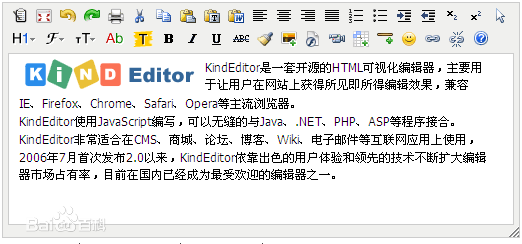
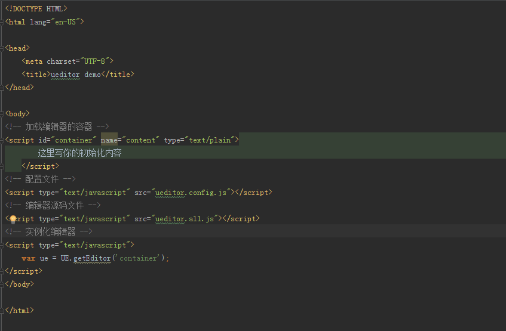
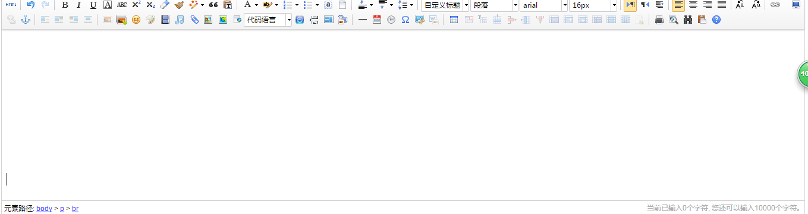
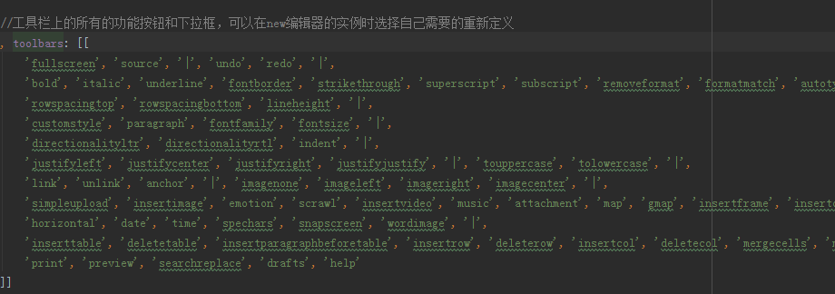
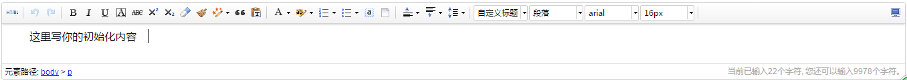

【小课堂第32期】如何使用富文本编辑器？
分享人：徐浩程
目录
1.背景介绍
2.知识剖析
3.常见问题
4.解决方案
5.编码实战
6.扩展思考
7.参考文献
8.更多讨论
1.背景介绍
富文本编辑器，Rich Text Editor, 简称 RTE, 是一种可内嵌于浏览器，所见即所得的文本编辑器。
——百度百科市面上的富文本编辑器很多，今天向大家推荐的就是百度出品的富文本编辑器——UEditor
UE的主要特点就是容量和加载速度上的改变，主文件的代码量为139k，而且放弃了使用传统的iframe模式，采用了div的加载方式， 以达到更快的加载速度和零加载失败率。
2.知识剖析
dialogs: 弹出对话框对应的资源和JS文件
lang: 编辑器国际化显示的文件
php或jsp或asp或net: 涉及到服务器端操作的后台文件
themes: 样式图片和样式文件
third-party: 第三方插件(包括代码高亮，源码编辑等组件）
ueditor.all.js: 开发版代码合并的结果,目录下所有文件的打包文件
ueditor.config.js: 编辑器的配置文件，建议和编辑器实例化页面置于同一目录
ueditor.parse.js: 编辑的内容显示页面引用，会自动加载表格、列表、代码高亮等样式,具体看内容展示文档
富文本编辑器的部署：
部署完成后：
3.常见问题
如何定制一个自己的工具栏
4.解决方案
修改配置项的方法：
1.方法一：修改 ueditor.config.js 里面的 toolbars
2.方法二：实例化编辑器的时候传入 toolbars 参数
修改toolbars：
传入toolbars参数：

修改完成后：
5.编码实战
如何定制自己的工具栏按钮
6.扩展思考
自定义请求参数
很多情境下，编辑器与后台通信需要有登录状态，很多时候后台需要额外的参数。 UEditor 自1.4.0版本提供设置额外参数的命令serverparam命令，可动态设置自定义参数表。 在向后台发出请求时，会把参数表以GET方式加到请求里。
7.参考文献
参考一：UEditor文档
参考二：UEditor使用小结
8.更多讨论
能否自己尝试制作一个富文本编辑器
鸣谢
感谢大家观看
BY : 徐浩程|李绍博